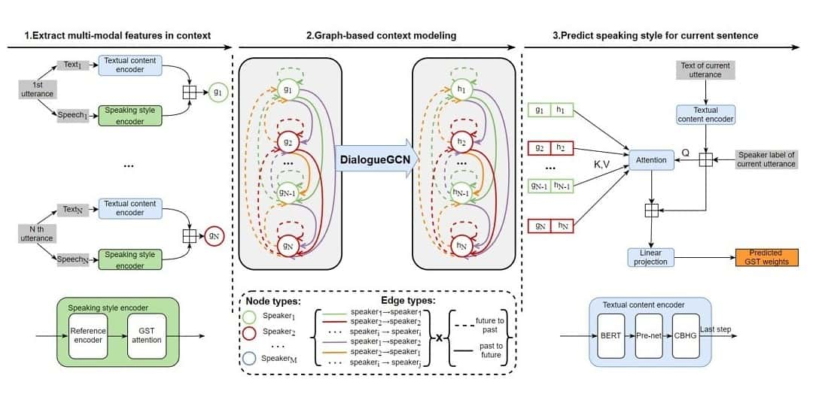
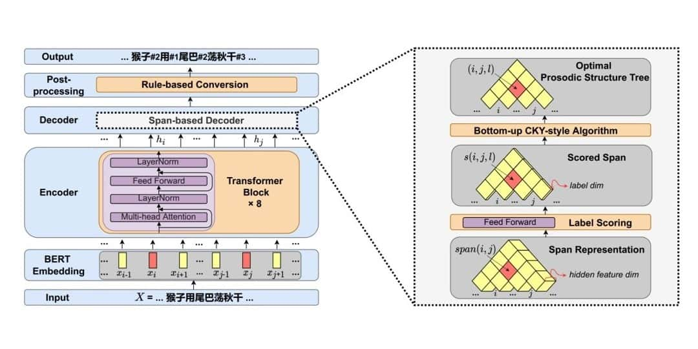

Major Awards
- 2021 Best Paper Finalists in SLT（刘良琪、户建坤）
- 2020 Annual Teaching Excellent Award of Tsinghua University（2020年度清华大学年度教学优秀奖）
- 2018, 2019, 2020 Outstanding / Excellent Award of Tencent AI Lab Rhino-Bird Focused Research and Visiting Scholar Program（2018、19、20年度腾讯AI Lab犀牛鸟专项研究及访问学者计划卓越奖、优秀奖）
- 2017 First Prize in the "Spoofing Attack Task" in the GeekPwn Contest（“清晨李唐王”团队在2017年度极棒全球极客大赛“AI仿声验声攻防赛”中斩获桂冠）
- 2009, 2016 Ministry of Education (MoE) Higher Education Outstanding Scientific Research Output Award in Technological Advancements（2009、16年度教育部科技进步奖）
Demos

- 05-03-2022
- ICASSP'22
Enhancing Speaking Styles in Conversational Text-to-Speech Synthesis with Graph-based Multi-modal Cotext Modeling
- 05-12-2022
- ICASSP'22
Transformer-S2A: Robust and Efficient Speech-to-Animation

- 05-13-2022
- ICASSP'22
A Character-level Span-based Model for Mandarin Prosodic Structure Prediction
Publications
Haibin Wu, Xu Li, Andy T Liu, Zhiyong Wu, Helen Meng, Hung-Yi Lee,
"Improving the Adversarial Robustness for Speaker Verification by Self-supervised Learning,"
IEEE/ACM Transactions on Audio, Speech, and Language Processing (TASLP),
vol. 30, pp. 202-217. IEEE, January, 2022.
(SCI, EI, THU-A)
Paper
Xixin Wu, Yuewen Cao, Hui Lu, Songxiang Liu, Disong Wang, Zhiyong Wu, Xunying Liu, Helen Meng,
"Speech Emotion Recognition Using Sequential Capsule Networks,"
IEEE/ACM Transactions on Audio, Speech, and Language Processing (TASLP),
vol. 29, pp. 3280-3291. IEEE, October, 2021.
(SCI, EI, THU-A)
Paper
Xixin Wu, Yuewen Cao, Hui Lu, Songxiang Liu, Shiyin Kang, Zhiyong Wu, Xunying Liu, Helen Meng,
"Exemplar-Based Emotive Speech Synthesis,"
IEEE/ACM Transactions on Audio, Speech, and Language Processing (TASLP),
vol. 29, pp. 874-886. IEEE, January, 2021.
(SCI, EI, THU-A)
Paper
Yingmei Guo, Linjun Shou, Jian Pei, Ming Gong, Mingxing Xu, Zhiyong Wu, Daxin Jiang,
"Learning from Multiple Noisy Augmented Data Sets for Better Cross-Lingual Spoken Language Understanding,"
[in] Proc. 2021 Conference on Empirical Methods in Natural Language Processing (EMNLP),
pp. 1-12. Punta Cana, Dominican Republic, November 7-11, 2021.
(EI, THU-A)
Paper
Yaohua Bu, Tianyi Ma, Weijun Li, Hang Zhou, Jia Jia, Shengqi Chen, Kaiyuan Xu, Dachuan Shi, Haozhe Wu, Zhihan Yang, Kun Li, Zhiyong Wu, Yuanchun Shi, Xiaobo Lu, Ziwei Liu,
"PTeacher: A Computer-Aided Personalized Pronunciation Training System with Exaggerated Audio-Visual Corrective Feedback,"
[in] Proc. 2021 CHI Conference on Human Factors in Computing Systems (CHI),
pp. 1-14. Yokohama, Japan, May 8-13, 2021.
(EI, CCF-A)
Paper
Demo
Suping Zhou, Jia Jia, Zhiyong Wu, Zhihan Yang, Yanfeng Wang, Wei Chen, Fanbo Meng, Shuo Huang, Jialie Shen, Xiaochuan Wang,
"Inferring Emotion from Large-Scale Internet Voice Data: A Semi-supervised Curriculum Augmentation based Deep Learning Approach,"
[in] Proc. the 35th AAAI Conference on Artificial Intelligence (AAAI),
pp. 6039-6047. Virtual, Online, February 2-9, 2021.
(EI, CCF-A)
Paper
Yishuang Ning, Sheng He, Zhiyong Wu, Chunxiao Xing, Liangjie Zhang,
"A Review of Deep Learning Based Speech Synthesis,"
Applied Sciences-Basel,
vol. 9, no. 19, pp. 4050. MDPI, September, 2019.
(SCI)
Paper
Runnan Li, Zhiyong Wu, Jia Jia, Jingbei Li, Wei Chen, Helen Meng,
"Inferring User Emotive State Changes in Realistic Human-Computer Conversational Dialogs,"
[in] Proc. ACM Multimedia Conference (ACM MM),
pp. 136-144. Seoul, Korea, October 22-26, 2018.
(EI, CCF-A)
Paper
Kun Li, Shaoguang Mao, Xu Li, Zhiyong Wu, Helen Meng,
"Automatic Lexical Stress and Pitch Accent Detection for L2 English Speech using Multi-Distribution Deep Neural Networks,"
Speech Communication (Speech Com),
vol. 96, pp. 28-36. Elsevier, February, 2018.
(SCI, EI, CCF-B)
Paper
Yishuang Ning, Jia Jia, Zhiyong Wu, Runnan Li, Yongsheng An, Yanfeng Wang, Helen Meng,
"Multi-task Deep Learning for User Intention Understanding in Speech Interaction Systems,"
[in] Proc. the 31th AAAI Conference on Artificial Intelligence (AAAI),
pp. 161-167. San Francisco, USA, February 4-9, 2017.
(EI, CCF-A)
Paper
Zhiyong Wu, Yishuang Ning, Xiao Zang, Jia Jia, Fanbo Meng, Helen Meng, Lianhong Cai,
"Generating Emphatic Speech with Hidden Markov Model for Expressive Speech Synthesis,"
Multimedia Tools and Applications (MTA),
vol. 74, no. 22, pp. 9909-9925. Springer, July, 2015.
(SCI, EI, CCF-C)
Paper
Zhiyong Wu, Kai Zhao, Xixin Wu, Xinyu Lan, Helen Meng,
"Acoustic to Articulatory Mapping with Deep Neural Network,"
Multimedia Tools and Applications (MTA),
vol. 74, no. 22, pp. 9889-9907. Springer, August, 2015.
(SCI, EI, CCF-C)
Paper
Qi Lyu, Zhiyong Wu, Jun Zhu,
"Polyphonic Music Modelling with LSTM-RTRBM,"
[in] Proc. ACM Multimedia Conference (ACM MM),
pp. 991-994. Brisbane, Australia, October 26-30, 2015.
(EI, CCF-A)
Paper
Qi Lyu, Zhiyong Wu, Jun Zhu, Helen Meng,
"Modelling High-dimensional Sequences with LSTM-RTRBM: Application to Polyphonic Music Generation,"
[in] Proc. International Joint Conference on Artificial Intelligence (IJCAI),
pp. 4138-4139. Buenos Aires, Argentina, July 25-31, 2015.
(EI, CCF-A)
Paper
Fanbo Meng, Zhiyong Wu, Jia Jia, Helen Meng, Lianhong Cai,
"Synthesizing English Emphatic Speech for Multimodal Corrective Feedback in Computer-Aided Pronunciation Training,"
Multimedia Tools and Applications (MTA),
vol. 73, no. 1, pp. 463-489. Springer, September, 2014.
(SCI, EI, CCF-C)
Paper
Jia Jia, Zhiyong Wu, Shen Zhang, Helen Meng, Lianhong Cai,
"Head and Facial Gestures Synthesis using PAD Model for an Expressive Talking Avatar,"
Multimedia Tools and Applications (MTA),
vol. 73, no. 1, pp. 439-461. Springer, September, 2014.
(SCI, EI, CCF-C)
Paper
Zhiyong Wu, Helen Meng, Hongwu Yang, Lianhong Cai,
"Modeling the Expressivity of Input Text Semantics for Chinese Text-to-Speech Synthesis in a Spoken Dialog System,"
IEEE Transaction on Audio, Speech and Language Processing (TASLP),
vol. 17, no. 8, pp. 1567-1577. IEEE, November, 2009.
(SCI, EI, THU-A)
Paper